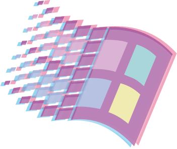

【 w e l c o m e t o o u r s q u a d p a g e 】
[ a b o u t u s ]
Bij de Ad Frontend Design & Development doe je alles met code: met code los je een parkeerprobleem op voor de Gemeente Amsterdam, ontwerp je voor het systeem van de Openbare Bibliotheek een betere zoekfunctie, en help je samen met de verpleegkundigen van het Amsterdam UMC de zorg te verbeteren. Je richt je tijdens deze tweejarige studie op webdesign, visual interface design en frontend development. Vanaf het begin van de opleiding werk je aan actuele opdrachten van échte opdrachtgevers, en leer je samenwerken in multidisciplinaire teams.
